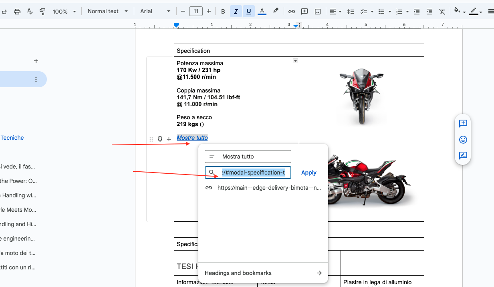
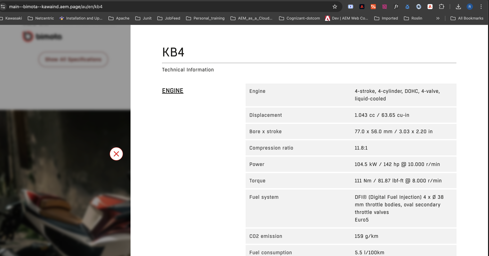
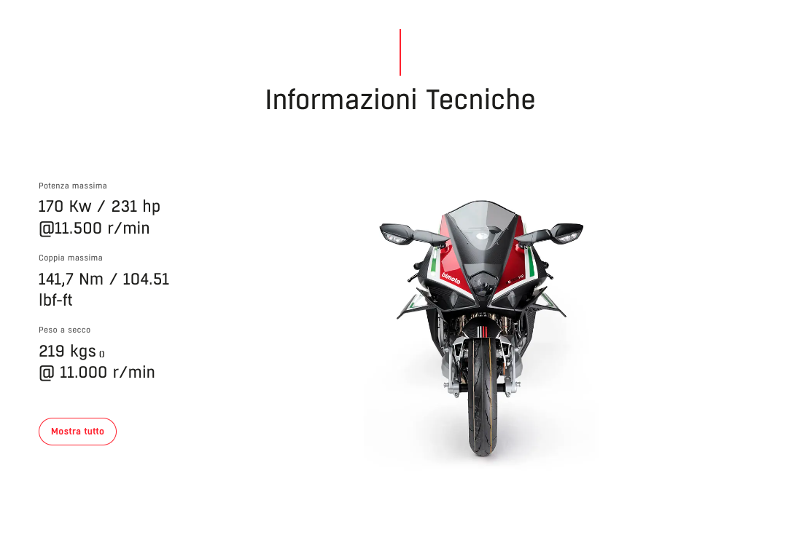

Specification
3 highlight specs + images + a button that opens the full Specification Table in a modal.
This component can be used on Product Pages where you could display a punchy summary of the vehicle specifications, with a button that opens the full specification table in a modal.
Required sections
- Section Headline (mandatory)
- 3 images of the model on a white background
- 3 highlight specifications
- A table filled with specifications, plus a button that opens it
Adding the block
Two ways to add it: copy the component block from an existing page under your respective country folder, or use the Library section from the da.live tool.
Linking the button to its Specification Table
For the button, link the page by adding the specification table's id at the end of the URL. For example: /#modal-specification-kb4. Select the button's text, click Edit link, and paste that fragment URL in. The linked Specification Table block elsewhere on the page must have a matching header, e.g. Specification Table (modal-specification-kb4) — the id after “modal-specification-” must match exactly on both sides.
The Specification Table block
This is a separate block from Specification, authored as its own table:
- First row: the block header with its modal id, e.g.
Specification Table (modal-specification-kb4) - Next row: the vehicle model name, in bold
- Then category rows (e.g. “Engine Specifications”) that group the label/value spec rows beneath them, exactly like the Specification Table module
Seeing it in action
A reference recording of the component's open/close behavior on the webpage: screen-capture (32).webm — ask your development contact for a copy if you'd like to see it before publishing.
What you fill in
| Title (line): Section Headline (mandatory) | e.g. "Informazioni Tecniche" / "Technical Information". |
| 3 highlight specs | Three short stat call-outs shown next to the images, e.g. Max Power, Max Torque, Weight. |
| 3 images | Three images of the model on a white background. |
| The button (mandatory) | e.g. "Show all specifications" / "Mostra tutto" — must link to the matching Specification Table’s modal id. |
| Linked Specification Table block | A separate block elsewhere on the page whose header id matches the button’s link, e.g. Specification Table (modal-specification-kb4). |

The Specification block skeleton in da.live: highlight specs on the left, image on the right.

Linking the button: editing its link to point at /#modal-specification-t…

The rendered result — headline, three highlight stats, image, and a 'Mostra tutto' / Show all button.
Copy/paste snippet
| Title (line) | | |---|---| | <<specification section headline>> | | | Specification | | |---|---| | <<add a highlight spec>> | <<add image here>> | | <<add another highlight spec>> | | | <<add another highlight spec>> | | | <<add the button>> | | | Specification Table (modal-specification-kb4) | | |---|---| | <<enter vehicle model name>> | | | | Engine Specifications | <<enter the specification title>> | <<specification text>> | | | <<enter the specification title>> | <<specification text>> | | <<enter the spec category>> | <<enter the specification title>> | <<specification text>> |